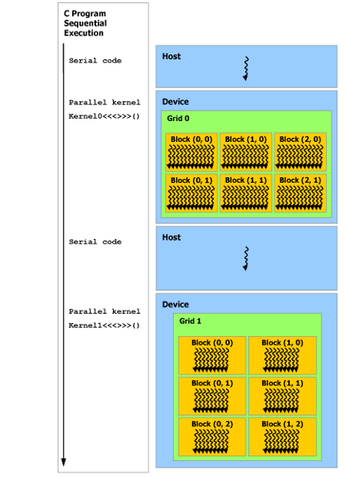

小喵的唠叨话：通过之前的对于GPU和CUDA的学习，我们应该简单的了解了什么是GPU，它能做什么，以及GPU的硬件结构。那么，大家是不是迫不及待的想要写出CUDA程序了呢？
本章就要通过最简单的几个理解，教会大家CUDA程序的写法，并理解其工作方式。 下面就是第一个程序：
#include <stdio.h>
int main() {
printf("Hello CUDA!\\n");
return 0;
}将上述代码保存成文件hello_cuda.cu，使用nvcc进行编译。
nvcc hello_cuda.cu -o hello_cuda.out便可以得到可执行文件hello_cuda.out，运行该可执行文件，便可得到如下的结果（实验的环境为CentOS 7）:
Hello CUDA!这就是第一个CUDA程序。
是的，这个程序确实和一般的CPU程序没什么两样，写这个程序主要是告诉大家，其实CUDA的语法本身并不难，我们可以像写CPU程序一样编写GPU上的程序。
现在我们简单分析一下这个程序，代码内容就不用分析了吧。首先，源码文件是以.cu结尾，这有别于C和C++的.c,.cc,.cpp等后缀。其次，编译的时候使用nvcc这个编译器，对于C/C++的程序，我们常用的编译器是gcc。NVIDIA公司通过提供额外的关键字（后面会说到）来拓展了C/C++语言，重写了gcc为nvcc，支持了整个CUDA程序的编译过程。nvcc的使用可以使用nvcc -h来查询。这不是本章的重点。 下面，我们看一个稍微复杂一点的程序。
void function_call3() {
}
__device__ void function_call2() {
}
__global__ void function_call1() {
function_call2(); // success
}
int main() {
function_call1<<<1,1>>>(); // success
// function_call2<<<1, 1>>>(); // error: a __device__ function call cannot be configured
function_call3(); // success
return 0;
}很遗憾，这个程序既不会完成出色的算法，也不会有任何的输出，更不会为您煮出香喷喷的咖啡。
但这里我们可以惊奇的发现两个特殊的关键字__global__和__device__，这就是我们之前提到过的对C/C++的拓展的关键字。
CUDA程序主要有两个部分，CPU上运行的程序和GPU上的程序。这些特殊的关键字就是为了说明后面定义的函数（这些关键字也可以修饰变量）在何处运行。main函数作为入口函数，之前没有任何的修饰，是很正常的CPU程序。同理function_call3也是CPU的程序(CPU上的程序也可以用__host__来修饰)。function_call1被__global__修饰，意思是该程序可以被任何程序所调用（CPU或GPU），但是是在GPU上运行。function_call2被__device__修饰，表示该程序是GPU上的程序并且只能被GPU程序所调用。理解调用规则了吗？<<<1, 1>>>这个符号，这也是对C/C++的拓展，这两个数字分别表示block_num和thread_num，用来指示GPU程序的线程块和块内线程的数目。我们暂时不用理解。
现在，整个程序是不是就变得很清晰？这其实就是一个验证CPU和GPU上的函数调用的例子。
通过上面的这个例子，我们已经知道了CPU和GPU程序的调用规则。并编写出了两个_什么都不做的_CUDA程序。
最后，我们看一个更为复杂的程序，一个向量的加法程序。程序中可能有一些我们没有介绍过的东西，只需意会即可。
#include <cuda_runtime.h>
#include <stdio.h>
#include <assert.h>
#define CUDA_CALL(x) { const cudaError_t a = (x); if (a!= cudaSuccess) { printf("\nCUDA Error: %s(err_num=%d)\n", cudaGetErrorString(a), a); cudaDeviceReset(); assert(0);}}
#define VECTOR_LENGTH 1024
#define BLOCK_NUM 2
#define THREAD_NUM 256
__global__ void vector_add(int *v1, int *v2, int *r) {
// 线程号
unsigned int tid = blockDim.x * blockIdx.x + threadIdx.x;
while (tid < VECTOR_LENGTH) {
r[tid] = v1[tid] + v2[tid];
tid += BLOCK_NUM * THREAD_NUM;
}
}
int main() {
// CPU内存
int *host_v1 = (int *) malloc(VECTOR_LENGTH * sizeof(int));
int *host_v2 = (int *) malloc(VECTOR_LENGTH * sizeof(int));
int *host_result = (int *) malloc(VECTOR_LENGTH * sizeof(int));
int *gpu_result = (int *) malloc(VECTOR_LENGTH * sizeof(int));
// GPU内存
int *device_v1;
int *device_v2;
int *device_result;
CUDA_CALL(cudaMalloc((void **)&device_v1, VECTOR_LENGTH * sizeof(int)));
CUDA_CALL(cudaMalloc((void **)&device_v2, VECTOR_LENGTH * sizeof(int)));
CUDA_CALL(cudaMalloc((void **)&device_result, VECTOR_LENGTH * sizeof(int)));
// 初始化CPU上的数据
for (int idx = 0; idx < VECTOR_LENGTH; ++ idx) {
host_v1[idx] = idx;
host_v2[idx] = idx;
}
// CPU计算结果
for (int idx = 0; idx < VECTOR_LENGTH; ++ idx) {
host_result[idx] = host_v1[idx] + host_v2[idx];
}
// 将CPU数据复制到GPU上
CUDA_CALL(cudaMemcpy(device_v1, host_v1, VECTOR_LENGTH * sizeof(int), cudaMemcpyHostToDevice));
CUDA_CALL(cudaMemcpy(device_v2, host_v2, VECTOR_LENGTH * sizeof(int), cudaMemcpyHostToDevice));
// 调用核函数,GPU计算结果
vector_add<<<BLOCK_NUM, THREAD_NUM>>>(device_v1, device_v2, device_result);
// 将GPU计算结果复制到CPU上
CUDA_CALL(cudaMemcpy(gpu_result, device_result, VECTOR_LENGTH * sizeof(int), cudaMemcpyDeviceToHost));
// 检查计算结果
int is_match = 1;
for (int idx = 0; idx < VECTOR_LENGTH; ++ idx) {
// printf("%d %d\\n", host_result[idx], gpu_result[idx]);
if (host_result[idx] != gpu_result[idx]) {
is_match = 0;
break;
}
}
if (is_match) {
printf("match\\n");
} else {
printf("not match\\n");
}
// 释放资源
free(host_v1);
free(host_v2);
free(host_result);
free(gpu_result);
CUDA_CALL(cudaFree(device_v1));
CUDA_CALL(cudaFree(device_v2));
CUDA_CALL(cudaFree(device_result));
return 0;
}这个程序看起来稍微有点复杂。我们来一点点的分析和理解。vector_add被__global__修饰，看来是个GPU的程序。主函数里分别用CPU和GPU两种方式计算了两个向量的加法，最后也做了比较。还记得我们之前说过的显存的概念吗？其实，CPU和GPU的程序只能访问对应的内存，即CPU访问主存，GPU访问显存，不能互相访问，因此我们不能让vector_add这个函数直接对CPU上的数据进行计算(malloc得到的内存数据)，而是将CPU数据在GPU上做一次拷贝，之后再计算。

*注：上图中顺序执行的代码（Series Code）是在Host上运行，（Parallel Code）是在Device上运行。
参考上图，我们简单总结一下CUDA程序的运行方式：我们在下面使用主机(host)表示CPU，使用设备(device)表示GPU。因此对于一个计算问题，我们需要在主机上准备好数据，然后复制到设备上，之后调用设备上的核函数(kernel function)进行计算，最终将设备上的计算结果复制到主机上。从而完成一次计算功能。对于复杂的任务，可以多次进行CPU->GPU->CPU->GPU->...的操作。
现在对于这个向量加法的程序是不是有点理解了？cudaMalloc的功能和malloc类似，但是是在GPU上申请显存，第一个参数是个指针的地址（不是一个指针），第二个参数是需要申请的内存的大小。申请完显存之后，会把显存的地址存入第一个参数指向的内存中，并返回一个状态码。但是，CPU上不能访问显存，因此这个指针在CPU上并没有什么实际意义，虽然我们可以把其中的地址打印出来，但是并不能访问其指向的存储空间。cudaMemcpy的功能与memcpy类似，参数分别表示：目的存储的地址，源存储地址，复制的数据大小，数据拷贝方向。数据拷贝方向有两种，Host->Device和Device->Host，分别用cudaMemcpyHostToDevice和cudaMemcpyDeviceToHost表示。 cudaFree的功能和free类似，用于释放GPU的显存。关于vector_add这个函数，它的参数是两个向量和结果的指针，这样就可以访问想要相加的向量的数据和结果的数据了。但是怎么知道当前需要计算向量的第几位的数值呢？参数中并没有给出。
unsigned int tid = blockDim.x * blockIdx.x + threadIdx.x;之前我们提到过<<<block_num, thread_num>>>表示指示核函数的工作方式，在这里vector_add这个函数实际上是被多个SP调用（实际上有block_num * thread_num这么多线程，GPU程序运行成千上万的线程都是很正常的，这和CPU程序有很大的不同），即同时被运行很多次。通过上述的代码是用来计算每个被运行的核函数的线程的id（具体的意思下一章会有介绍）。这样每个线程能够根据自己的线程id，读取自己应该处理的数据，计算并将结果写回显存。
while (tid < VECTOR_LENGTH) {
r[tid] = v1[tid] + v2[tid];
tid += BLOCK_NUM * THREAD_NUM;
}这个循环使得这个程序对于任意长度的向量都可以做加法（可能需要把vector_length当成变量传入）。tid < VECTOR_LENGTH这个判断是为了防止线程访问越界。
最后需要介绍的是CUDA的状态码，cudaMalloc，cudaMemcpy，cudaFree都有返回函数执行的状态码，但如果每次都检查这些状态码，则会有太多的重复代码，所以这里写了一个CUDA_CALL的宏定义，用来对函数调用的返回值进行检查。
至此，相信读者以及能够很清楚的理解这个向量加法的程序了，也能照这样子写出简单的CUDA程序了。现在我们唯一不了解的可能就是<<<block_num, thread_num>>>这种写法的具体意义和里面的参数的具体作用和设置。
下一章，小喵为您深入浅出CUDA线程模型。定让客官们不虚此行！
转载请注明出处。